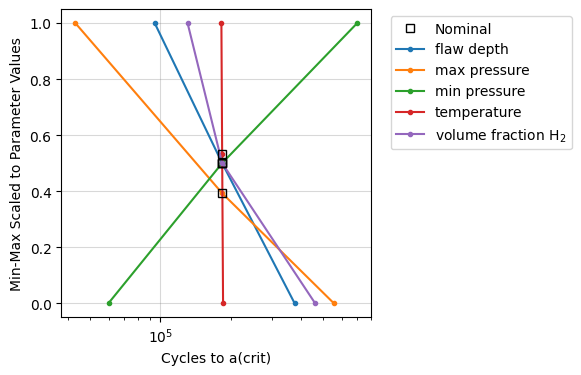
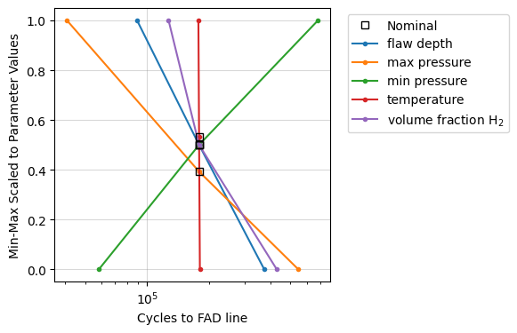
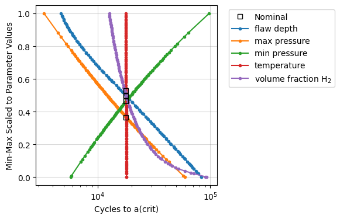
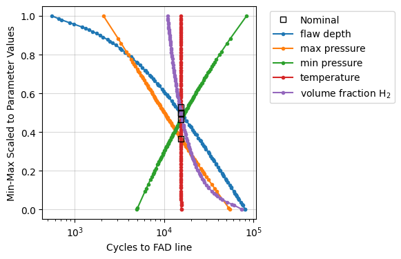

[1]:
%matplotlib inline
%load_ext autoreload
%autoreload 2
[2]:
import numpy as np
import matplotlib.pyplot as plt
from helpr.api import CrackEvolutionAnalysis
from helpr.utilities.unit_conversion import convert_psi_to_mpa, convert_in_to_m
from helpr.utilities.plots import plot_sensitivity_results
from probabilistic.capabilities.uncertainty_definitions import UniformDistribution, NormalDistribution, DeterministicCharacterization
[3]:
# # turn warnings back on for general use
# import warnings
# warnings.filterwarnings('ignore')
Sensitivity Analysis of Pipeline Lifetime Evaluation
Problem Specification
Geometry
[4]:
pipe_outer_diameter = DeterministicCharacterization(name='outer_diameter',
value=convert_in_to_m(36)) # pipe outer diameter, m
wall_thickness = DeterministicCharacterization(name='wall_thickness',
value=convert_in_to_m(0.406)) # pipe wall thickness, m
Material Properties
[5]:
yield_strength = DeterministicCharacterization(name='yield_strength',
value=convert_psi_to_mpa(52_000)) # material yield strength, MPa
fracture_resistance = DeterministicCharacterization(name='fracture_resistance',
value=55) # fracture resistance (toughness), MPa m1/2
Operating Conditions
[6]:
max_pressure = NormalDistribution(name='max_pressure',
uncertainty_type='aleatory',
nominal_value=convert_psi_to_mpa(840),
mean=convert_psi_to_mpa(850),
std_deviation=convert_psi_to_mpa(20)) # maximum pressure during oscillation, MPa
min_pressure = NormalDistribution(name='min_pressure',
uncertainty_type='aleatory',
nominal_value=convert_psi_to_mpa(638),
mean=convert_psi_to_mpa(638),
std_deviation=convert_psi_to_mpa(20)) # minimum pressure during oscillation, MPa
temperature = UniformDistribution(name='temperature',
uncertainty_type='aleatory',
nominal_value=293,
upper_bound=300,
lower_bound=285) # gas blend temperature variation, K
volume_fraction_h2 = UniformDistribution(name='volume_fraction_h2',
uncertainty_type='aleatory',
nominal_value=0.1,
upper_bound=0.2,
lower_bound=0.0) # % volume fraction H2 in natural gas blend, fraction
Initial Crack Dimensions
[7]:
flaw_depth = UniformDistribution(name='flaw_depth',
uncertainty_type='aleatory',
nominal_value=25,
upper_bound=30,
lower_bound=20) # population of flaw % through pipe thickness, %
flaw_length = DeterministicCharacterization(name='flaw_length',
value=convert_in_to_m(1.575)) # length of initial crack/flaw, m
Quantities of Interest (QoI)
[8]:
plotted_variable = 'Cycles to a(crit)', 'Cycles to FAD line'
Probabilistic Settings
[9]:
sample_type = 'bounding'
Analysis
Performing basic bounding sensitivity study on uncertain variables
Use 1st 99th percentiles of uncertain variables while holding others at nominal
[10]:
bounding_analysis = \
CrackEvolutionAnalysis(outer_diameter=pipe_outer_diameter,
wall_thickness=wall_thickness,
flaw_depth=flaw_depth,
max_pressure=max_pressure,
min_pressure=min_pressure,
temperature=temperature,
volume_fraction_h2=volume_fraction_h2,
yield_strength=yield_strength,
fracture_resistance=fracture_resistance,
flaw_length=flaw_length,
sample_type=sample_type,
stress_intensity_method='api')
bounding_analysis.perform_study()
/Users/bbschro/Development/helpr_external/src/helpr/physics/stress_state.py:210: UserWarning: Stress state 76.44 > 72% SMYS
wr.warn(f'Stress state {self.percent_smys:.2f} > 72% SMYS', UserWarning)
[11]:
plot_sensitivity_results(bounding_analysis, criteria=plotted_variable[0])
plt.savefig('./Figures/sensitivity_bounding_cycles.png', format='png', dpi=300, bbox_inches='tight')
plot_sensitivity_results(bounding_analysis, criteria=plotted_variable[1])
plt.savefig('./Figures/sensitivity_bounding_fad.png', format='png', dpi=300, bbox_inches='tight')


Probabilistic Settings
[12]:
sample_type = 'sensitivity'
sample_size = 100
Performing sensitivity study on uncertain variables
Use LHS samples of uncertain variables while other variables held at nominal values
[13]:
sampling_analysis = CrackEvolutionAnalysis(outer_diameter=pipe_outer_diameter,
wall_thickness=wall_thickness,
flaw_depth=flaw_depth,
max_pressure=max_pressure,
min_pressure=min_pressure,
temperature=temperature,
volume_fraction_h2=volume_fraction_h2,
yield_strength=yield_strength,
fracture_resistance=fracture_resistance,
flaw_length=flaw_length,
aleatory_samples=sample_size,
sample_type=sample_type,
stress_intensity_method='anderson')
sampling_analysis.perform_study()
/Users/bbschro/Development/helpr_external/src/helpr/physics/stress_state.py:521: UserWarning: Inner Radius / wall thickness exceeds bounds 5 <= R_i/t <= 20, R_i/t = 43.33497536945812, violating Anderson solution limits.
wr.warn('Inner Radius / wall thickness exceeds bounds ' +
/Users/bbschro/Development/helpr_external/src/helpr/physics/stress_state.py:210: UserWarning: Stress state 72.02 > 72% SMYS
wr.warn(f'Stress state {self.percent_smys:.2f} > 72% SMYS', UserWarning)
/Users/bbschro/Development/helpr_external/src/helpr/physics/stress_state.py:210: UserWarning: Stress state 72.07 > 72% SMYS
wr.warn(f'Stress state {self.percent_smys:.2f} > 72% SMYS', UserWarning)
/Users/bbschro/Development/helpr_external/src/helpr/physics/stress_state.py:210: UserWarning: Stress state 72.11 > 72% SMYS
wr.warn(f'Stress state {self.percent_smys:.2f} > 72% SMYS', UserWarning)
/Users/bbschro/Development/helpr_external/src/helpr/physics/stress_state.py:210: UserWarning: Stress state 72.17 > 72% SMYS
wr.warn(f'Stress state {self.percent_smys:.2f} > 72% SMYS', UserWarning)
/Users/bbschro/Development/helpr_external/src/helpr/physics/stress_state.py:210: UserWarning: Stress state 72.19 > 72% SMYS
wr.warn(f'Stress state {self.percent_smys:.2f} > 72% SMYS', UserWarning)
/Users/bbschro/Development/helpr_external/src/helpr/physics/stress_state.py:210: UserWarning: Stress state 72.22 > 72% SMYS
wr.warn(f'Stress state {self.percent_smys:.2f} > 72% SMYS', UserWarning)
/Users/bbschro/Development/helpr_external/src/helpr/physics/stress_state.py:210: UserWarning: Stress state 72.30 > 72% SMYS
wr.warn(f'Stress state {self.percent_smys:.2f} > 72% SMYS', UserWarning)
/Users/bbschro/Development/helpr_external/src/helpr/physics/stress_state.py:210: UserWarning: Stress state 72.31 > 72% SMYS
wr.warn(f'Stress state {self.percent_smys:.2f} > 72% SMYS', UserWarning)
/Users/bbschro/Development/helpr_external/src/helpr/physics/stress_state.py:210: UserWarning: Stress state 72.37 > 72% SMYS
wr.warn(f'Stress state {self.percent_smys:.2f} > 72% SMYS', UserWarning)
/Users/bbschro/Development/helpr_external/src/helpr/physics/stress_state.py:210: UserWarning: Stress state 72.39 > 72% SMYS
wr.warn(f'Stress state {self.percent_smys:.2f} > 72% SMYS', UserWarning)
/Users/bbschro/Development/helpr_external/src/helpr/physics/stress_state.py:210: UserWarning: Stress state 72.45 > 72% SMYS
wr.warn(f'Stress state {self.percent_smys:.2f} > 72% SMYS', UserWarning)
/Users/bbschro/Development/helpr_external/src/helpr/physics/stress_state.py:210: UserWarning: Stress state 72.51 > 72% SMYS
wr.warn(f'Stress state {self.percent_smys:.2f} > 72% SMYS', UserWarning)
/Users/bbschro/Development/helpr_external/src/helpr/physics/stress_state.py:210: UserWarning: Stress state 72.56 > 72% SMYS
wr.warn(f'Stress state {self.percent_smys:.2f} > 72% SMYS', UserWarning)
/Users/bbschro/Development/helpr_external/src/helpr/physics/stress_state.py:210: UserWarning: Stress state 72.57 > 72% SMYS
wr.warn(f'Stress state {self.percent_smys:.2f} > 72% SMYS', UserWarning)
/Users/bbschro/Development/helpr_external/src/helpr/physics/stress_state.py:210: UserWarning: Stress state 72.62 > 72% SMYS
wr.warn(f'Stress state {self.percent_smys:.2f} > 72% SMYS', UserWarning)
/Users/bbschro/Development/helpr_external/src/helpr/physics/stress_state.py:210: UserWarning: Stress state 72.67 > 72% SMYS
wr.warn(f'Stress state {self.percent_smys:.2f} > 72% SMYS', UserWarning)
/Users/bbschro/Development/helpr_external/src/helpr/physics/stress_state.py:210: UserWarning: Stress state 72.69 > 72% SMYS
wr.warn(f'Stress state {self.percent_smys:.2f} > 72% SMYS', UserWarning)
/Users/bbschro/Development/helpr_external/src/helpr/physics/stress_state.py:210: UserWarning: Stress state 72.74 > 72% SMYS
wr.warn(f'Stress state {self.percent_smys:.2f} > 72% SMYS', UserWarning)
/Users/bbschro/Development/helpr_external/src/helpr/physics/stress_state.py:210: UserWarning: Stress state 72.81 > 72% SMYS
wr.warn(f'Stress state {self.percent_smys:.2f} > 72% SMYS', UserWarning)
/Users/bbschro/Development/helpr_external/src/helpr/physics/stress_state.py:210: UserWarning: Stress state 72.85 > 72% SMYS
wr.warn(f'Stress state {self.percent_smys:.2f} > 72% SMYS', UserWarning)
/Users/bbschro/Development/helpr_external/src/helpr/physics/stress_state.py:210: UserWarning: Stress state 72.87 > 72% SMYS
wr.warn(f'Stress state {self.percent_smys:.2f} > 72% SMYS', UserWarning)
/Users/bbschro/Development/helpr_external/src/helpr/physics/stress_state.py:210: UserWarning: Stress state 72.92 > 72% SMYS
wr.warn(f'Stress state {self.percent_smys:.2f} > 72% SMYS', UserWarning)
/Users/bbschro/Development/helpr_external/src/helpr/physics/stress_state.py:210: UserWarning: Stress state 72.96 > 72% SMYS
wr.warn(f'Stress state {self.percent_smys:.2f} > 72% SMYS', UserWarning)
/Users/bbschro/Development/helpr_external/src/helpr/physics/stress_state.py:210: UserWarning: Stress state 73.00 > 72% SMYS
wr.warn(f'Stress state {self.percent_smys:.2f} > 72% SMYS', UserWarning)
/Users/bbschro/Development/helpr_external/src/helpr/physics/stress_state.py:210: UserWarning: Stress state 73.08 > 72% SMYS
wr.warn(f'Stress state {self.percent_smys:.2f} > 72% SMYS', UserWarning)
/Users/bbschro/Development/helpr_external/src/helpr/physics/stress_state.py:210: UserWarning: Stress state 73.10 > 72% SMYS
wr.warn(f'Stress state {self.percent_smys:.2f} > 72% SMYS', UserWarning)
/Users/bbschro/Development/helpr_external/src/helpr/physics/stress_state.py:210: UserWarning: Stress state 73.13 > 72% SMYS
wr.warn(f'Stress state {self.percent_smys:.2f} > 72% SMYS', UserWarning)
/Users/bbschro/Development/helpr_external/src/helpr/physics/stress_state.py:210: UserWarning: Stress state 73.20 > 72% SMYS
wr.warn(f'Stress state {self.percent_smys:.2f} > 72% SMYS', UserWarning)
/Users/bbschro/Development/helpr_external/src/helpr/physics/stress_state.py:210: UserWarning: Stress state 73.25 > 72% SMYS
wr.warn(f'Stress state {self.percent_smys:.2f} > 72% SMYS', UserWarning)
/Users/bbschro/Development/helpr_external/src/helpr/physics/stress_state.py:210: UserWarning: Stress state 73.29 > 72% SMYS
wr.warn(f'Stress state {self.percent_smys:.2f} > 72% SMYS', UserWarning)
/Users/bbschro/Development/helpr_external/src/helpr/physics/stress_state.py:210: UserWarning: Stress state 73.34 > 72% SMYS
wr.warn(f'Stress state {self.percent_smys:.2f} > 72% SMYS', UserWarning)
/Users/bbschro/Development/helpr_external/src/helpr/physics/stress_state.py:210: UserWarning: Stress state 73.40 > 72% SMYS
wr.warn(f'Stress state {self.percent_smys:.2f} > 72% SMYS', UserWarning)
/Users/bbschro/Development/helpr_external/src/helpr/physics/stress_state.py:210: UserWarning: Stress state 73.45 > 72% SMYS
wr.warn(f'Stress state {self.percent_smys:.2f} > 72% SMYS', UserWarning)
/Users/bbschro/Development/helpr_external/src/helpr/physics/stress_state.py:210: UserWarning: Stress state 73.47 > 72% SMYS
wr.warn(f'Stress state {self.percent_smys:.2f} > 72% SMYS', UserWarning)
/Users/bbschro/Development/helpr_external/src/helpr/physics/stress_state.py:210: UserWarning: Stress state 73.53 > 72% SMYS
wr.warn(f'Stress state {self.percent_smys:.2f} > 72% SMYS', UserWarning)
/Users/bbschro/Development/helpr_external/src/helpr/physics/stress_state.py:210: UserWarning: Stress state 73.60 > 72% SMYS
wr.warn(f'Stress state {self.percent_smys:.2f} > 72% SMYS', UserWarning)
/Users/bbschro/Development/helpr_external/src/helpr/physics/stress_state.py:210: UserWarning: Stress state 73.67 > 72% SMYS
wr.warn(f'Stress state {self.percent_smys:.2f} > 72% SMYS', UserWarning)
/Users/bbschro/Development/helpr_external/src/helpr/physics/stress_state.py:210: UserWarning: Stress state 73.68 > 72% SMYS
wr.warn(f'Stress state {self.percent_smys:.2f} > 72% SMYS', UserWarning)
/Users/bbschro/Development/helpr_external/src/helpr/physics/stress_state.py:210: UserWarning: Stress state 73.78 > 72% SMYS
wr.warn(f'Stress state {self.percent_smys:.2f} > 72% SMYS', UserWarning)
/Users/bbschro/Development/helpr_external/src/helpr/physics/stress_state.py:210: UserWarning: Stress state 73.83 > 72% SMYS
wr.warn(f'Stress state {self.percent_smys:.2f} > 72% SMYS', UserWarning)
/Users/bbschro/Development/helpr_external/src/helpr/physics/stress_state.py:210: UserWarning: Stress state 73.89 > 72% SMYS
wr.warn(f'Stress state {self.percent_smys:.2f} > 72% SMYS', UserWarning)
/Users/bbschro/Development/helpr_external/src/helpr/physics/stress_state.py:210: UserWarning: Stress state 73.97 > 72% SMYS
wr.warn(f'Stress state {self.percent_smys:.2f} > 72% SMYS', UserWarning)
/Users/bbschro/Development/helpr_external/src/helpr/physics/stress_state.py:210: UserWarning: Stress state 73.98 > 72% SMYS
wr.warn(f'Stress state {self.percent_smys:.2f} > 72% SMYS', UserWarning)
/Users/bbschro/Development/helpr_external/src/helpr/physics/stress_state.py:210: UserWarning: Stress state 74.07 > 72% SMYS
wr.warn(f'Stress state {self.percent_smys:.2f} > 72% SMYS', UserWarning)
/Users/bbschro/Development/helpr_external/src/helpr/physics/stress_state.py:210: UserWarning: Stress state 74.11 > 72% SMYS
wr.warn(f'Stress state {self.percent_smys:.2f} > 72% SMYS', UserWarning)
/Users/bbschro/Development/helpr_external/src/helpr/physics/stress_state.py:210: UserWarning: Stress state 74.22 > 72% SMYS
wr.warn(f'Stress state {self.percent_smys:.2f} > 72% SMYS', UserWarning)
/Users/bbschro/Development/helpr_external/src/helpr/physics/stress_state.py:210: UserWarning: Stress state 74.31 > 72% SMYS
wr.warn(f'Stress state {self.percent_smys:.2f} > 72% SMYS', UserWarning)
/Users/bbschro/Development/helpr_external/src/helpr/physics/stress_state.py:210: UserWarning: Stress state 74.37 > 72% SMYS
wr.warn(f'Stress state {self.percent_smys:.2f} > 72% SMYS', UserWarning)
/Users/bbschro/Development/helpr_external/src/helpr/physics/stress_state.py:210: UserWarning: Stress state 74.44 > 72% SMYS
wr.warn(f'Stress state {self.percent_smys:.2f} > 72% SMYS', UserWarning)
/Users/bbschro/Development/helpr_external/src/helpr/physics/stress_state.py:210: UserWarning: Stress state 74.56 > 72% SMYS
wr.warn(f'Stress state {self.percent_smys:.2f} > 72% SMYS', UserWarning)
/Users/bbschro/Development/helpr_external/src/helpr/physics/stress_state.py:210: UserWarning: Stress state 74.64 > 72% SMYS
wr.warn(f'Stress state {self.percent_smys:.2f} > 72% SMYS', UserWarning)
/Users/bbschro/Development/helpr_external/src/helpr/physics/stress_state.py:210: UserWarning: Stress state 74.73 > 72% SMYS
wr.warn(f'Stress state {self.percent_smys:.2f} > 72% SMYS', UserWarning)
/Users/bbschro/Development/helpr_external/src/helpr/physics/stress_state.py:210: UserWarning: Stress state 74.83 > 72% SMYS
wr.warn(f'Stress state {self.percent_smys:.2f} > 72% SMYS', UserWarning)
/Users/bbschro/Development/helpr_external/src/helpr/physics/stress_state.py:210: UserWarning: Stress state 74.93 > 72% SMYS
wr.warn(f'Stress state {self.percent_smys:.2f} > 72% SMYS', UserWarning)
/Users/bbschro/Development/helpr_external/src/helpr/physics/stress_state.py:210: UserWarning: Stress state 75.03 > 72% SMYS
wr.warn(f'Stress state {self.percent_smys:.2f} > 72% SMYS', UserWarning)
/Users/bbschro/Development/helpr_external/src/helpr/physics/stress_state.py:210: UserWarning: Stress state 75.13 > 72% SMYS
wr.warn(f'Stress state {self.percent_smys:.2f} > 72% SMYS', UserWarning)
/Users/bbschro/Development/helpr_external/src/helpr/physics/stress_state.py:210: UserWarning: Stress state 75.37 > 72% SMYS
wr.warn(f'Stress state {self.percent_smys:.2f} > 72% SMYS', UserWarning)
/Users/bbschro/Development/helpr_external/src/helpr/physics/stress_state.py:210: UserWarning: Stress state 75.48 > 72% SMYS
wr.warn(f'Stress state {self.percent_smys:.2f} > 72% SMYS', UserWarning)
/Users/bbschro/Development/helpr_external/src/helpr/physics/stress_state.py:210: UserWarning: Stress state 75.87 > 72% SMYS
wr.warn(f'Stress state {self.percent_smys:.2f} > 72% SMYS', UserWarning)
/Users/bbschro/Development/helpr_external/src/helpr/physics/stress_state.py:210: UserWarning: Stress state 76.08 > 72% SMYS
wr.warn(f'Stress state {self.percent_smys:.2f} > 72% SMYS', UserWarning)
/Users/bbschro/Development/helpr_external/src/helpr/physics/stress_state.py:210: UserWarning: Stress state 77.08 > 72% SMYS
wr.warn(f'Stress state {self.percent_smys:.2f} > 72% SMYS', UserWarning)
[14]:
plot_sensitivity_results(sampling_analysis, criteria=plotted_variable[0])
plt.savefig('./Figures/sensitivity_study_cycles.png', format='png', dpi=300, bbox_inches='tight')
plot_sensitivity_results(sampling_analysis, criteria=plotted_variable[1])
plt.savefig('./Figures/sensitivity_study_fad.png', format='png', dpi=300, bbox_inches='tight')


[15]:
sampling_analysis.save_results()
[15]:
'Results/date_30_03_2026_time_21_39/'